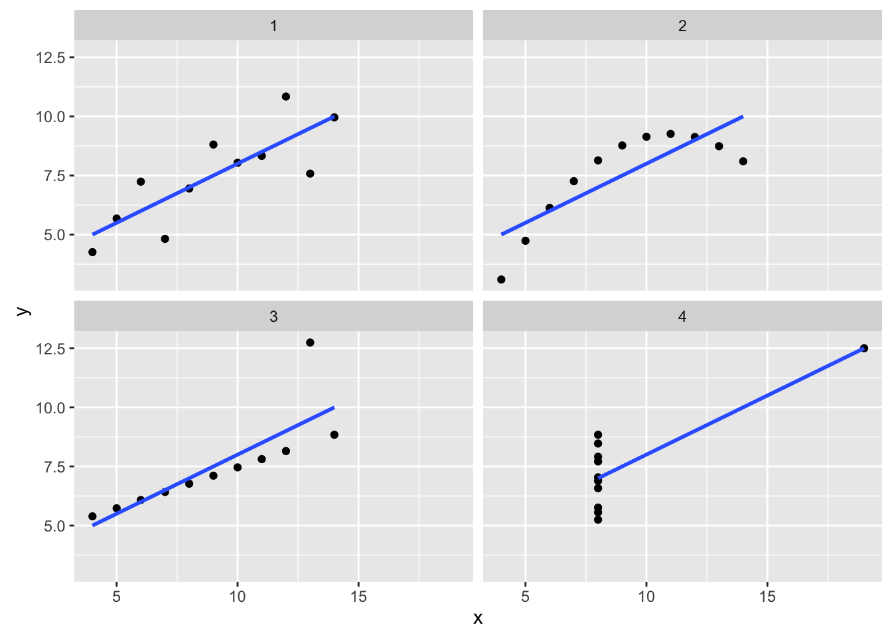

POL S/CS&SS 501, University of Washington, Winter 2016
$$ \DeclareMathOperator{\mean}{mean} \DeclareMathOperator{\var}{var} \DeclareMathOperator{\E}{E} \DeclareMathOperator{\MSE}{MSE} \DeclareMathOperator{\Bias}{Bias} \DeclareMathOperator{\SE}{se} \DeclareMathOperator{\SD}{sd} \DeclareMathOperator{\argmin}{argmin} \DeclareMathOperator{\argmax}{argmax} $$Covariance and Correlation
Jeffrey Arnold
February 25, 2016
library("dplyr")
library("tidyr")
library("broom")
library("ggplot2")
library("uwpols501")Covariance
The sample covariance of \(x\) and \(y\) is, \[ \Cov(x, y) = \frac{1}{n - 1} \sum_i (x_i - \bar{x}) (y_i - \bar{y}) \]
There is also corresponding parameter for the population defined in terms of the expectation of random variables. The covariance of random variables \(X\) and \(Y\) are, \[ \Cov(X, Y) = (X - \E(X)) (Y - \E(Y)) \]
- The covariance of a variable with itself is its variance, \[ Cov(x, x) = \frac{1}{n - 1} \sum_i (x_i - \bar{x}) (x_i - \bar{x}) = Var(x) \]
- Like variance, the covariance includes the term \(1 / (n - 1)\). This is because dividing by \(n - 1\) provides an unbiased estimate of the population covariance.
- The range of covariance is \((-\infty, +\infty)\).
- Covarariance does not change when a constant is added to either (or both) variables, \[ \begin{aligned}[t] Cov(x + a, y) = \frac{1}{n - 1} \sum_i ((x_i + a) - \overline{(x + a)} - b) (y_i - \bar{y}) \\ = Cov(x + a, y) = \frac{1}{n - 1} \sum_i ((x_i + a) - \bar{x} - a) (y_i - \bar{y}) \\ = Cov(x + a, y) = \frac{1}{n - 1} \sum_i (x_i + \bar{x}) (y_i - \bar{y}) \\ = Cov(x, y) \end{aligned}[t] \]
- Covariance does change when either (or both) variables is multiplied by a constant. This implies that the scale of the variables affects the covariance. \[ \begin{aligned}[t] Cov(a x, y) = \frac{1}{n - 1} \sum_i (a x_i - \overline{(a x)) (y_i - \bar{y}) \\ = Cov(a x, y) = \frac{1}{n - 1} \sum_i (ax_i - a\bar{x}) (y_i - \bar{y}) \\ = Cov(a x, y) = \frac{a}{n - 1} \sum_i (x_i + \bar{x}) (y_i - \bar{y}) = a Cov(x, y) \end{aligned}[t] \]
Correlation
The sample covariance of \(x\) and \(y\) is the covariance divided by the \[ \Cor(x, y) = \Cov(x, y) / (\sd(x) \sd(y)) \]
- The correlation of a variable with itself is equal to one, \[ Cor(x, x) = \Cov(x, x) / (\sd(x) \sd(x)) = \Var(x) / \Var(x) = 1 \]
- The range of covariance is \((-1, 1)\).
- Correlation does not change when a constant is added to either (or both) variables, \[ \begin{aligned}[t] \Cor(x + a, y) = \frac{\Cov(x + a, y)}{\sd(x + a) \sd(y)} = \frac{\Cov(x, y) }{ \sd(x) \sd(y)} = \Cor(x, y) \end{aligned}[t] \]
- Unlike covariance, correlation does not change when either (or both) variables is multiplied by a constant. Thus, the correlation of two variables, is not affected by the scale of those variables. \[ \begin{aligned}[t] \Cor(ax, y) = \frac{\Cov(ax, y)}{\sd(ax) \sd(y)} = \frac{a \Cov(x, y) }{a \sd(x) \sd(y)} = \Cor(x, y) \end{aligned}[t] \]
Example
What is the relationship between the log effective number of parties and redistribution?
data("iver", package = "uwpols501")iver_cov_table_1 <-
iver %>%
mutate(ln_enp = log(enp),
ln_enp_diff = ln_enp - mean(ln_enp),
povred_diff = povred - mean(povred),
povred_diff_ln_enp_diff = ln_enp_diff * povred_diff) %>%
select(cty, povred, ln_enp, povred_diff,ln_enp_diff, povred_diff_ln_enp_diff)
iver_cov_table_1 %>%
knitr::kable()| cty | povred | ln_enp | povred_diff | ln_enp_diff | povred_diff_ln_enp_diff |
|---|---|---|---|---|---|
| Australia | 42.16 | 0.8671005 | -8.657857 | -0.3334327 | 2.8868129 |
| Belgium | 78.79 | 1.9473377 | 27.972143 | 0.7468045 | 20.8897219 |
| Canada | 29.90 | 0.5247285 | -20.917857 | -0.6758047 | 14.1363858 |
| Denmark | 71.54 | 1.6174061 | 20.722143 | 0.4168729 | 8.6384992 |
| Finland | 69.08 | 1.6370531 | 18.262143 | 0.4365199 | 7.9717882 |
| France | 57.91 | 0.9858168 | 7.092143 | -0.2147164 | -1.5227995 |
| Germany | 46.90 | 1.1505720 | -3.917857 | -0.0499612 | 0.1957408 |
| Italy | 42.81 | 1.4134230 | -8.007857 | 0.2128898 | -1.7047913 |
| Netherlands | 66.93 | 1.2499017 | 16.112143 | 0.0493685 | 0.7954327 |
| Norway | 67.17 | 1.1281711 | 16.352143 | -0.0723621 | -1.1832757 |
| Sweden | 64.48 | 1.2208299 | 13.662143 | 0.0202967 | 0.2772966 |
| Switzerland | 13.02 | 1.6601310 | -37.797857 | 0.4595978 | -17.3718126 |
| United Kingdom | 48.66 | 0.7371641 | -2.157857 | -0.4633691 | 0.9998844 |
| United States | 12.10 | 0.6678294 | -38.717857 | -0.5327038 | 20.6251511 |
| The covariance is | the sum | of the produ | ct of the diff | erences betwee | n the variables and their means, |
summarize(iver_cov_table_1, sum(povred_diff_ln_enp_diff) / (n() - 1))## Source: local data frame [1 x 1]
##
## sum(povred_diff_ln_enp_diff)/(n() - 1)
## (dbl)
## 1 4.279541We can confirm this using the cov function
cov(iver$povred, log(iver$enp))## [1] 4.279541Note that the covariance does not depend on the order of the variables,
cov(log(iver$enp), iver$povred)## [1] 4.279541The correlation divides the covariance by the product of the standard deviations of each variable,
cov(iver$povred, log(iver$enp)) / (sd(iver$povred) * sd(log(iver$enp)))## [1] 0.480118This agrees with the correlation as produced by cor,
cor(iver$povred, log(iver$enp))## [1] 0.480118Anscombe Quartet
The Anscombe quartet is a data frame included in
data("anscombe", package = "datasets")anscombe_df <-
as_data_frame(anscombe) %>%
mutate(id = row_number()) %>%
gather(variable_, value, -id) %>%
separate(variable_, c("variable", "dataset"), sep = 1) %>%
spread(variable, value)What are the means, standard deviations, and correlations of \(x\) and \(y\) in each dataset,
anscombe_df %>%
group_by(dataset) %>%
summarize(mean_x = mean(x),
mean_y = mean(y),
sd_x = sd(x),
sd_y = sd(y),
cor_xy = cor(x, y),
cov_xy = cov(x, y))## Source: local data frame [4 x 7]
##
## dataset mean_x mean_y sd_x sd_y cor_xy cov_xy
## (chr) (dbl) (dbl) (dbl) (dbl) (dbl) (dbl)
## 1 1 9 7.500909 3.316625 2.031568 0.8164205 5.501
## 2 2 9 7.500909 3.316625 2.031657 0.8162365 5.500
## 3 3 9 7.500000 3.316625 2.030424 0.8162867 5.497
## 4 4 9 7.500909 3.316625 2.030579 0.8165214 5.499These datasets have the same means for \(x\) and \(y\), and approximately the same standard deviations of \(x\) and \(y\), and the approximately same correlation and covariance between \(x\) and \(y\). If we run linear regression on each of these, they have the same intercepts and slopes.
anscombe_df %>%
group_by(dataset) %>%
do(tidy(lm(y ~ x, data = .))) %>%
select(term, estimate) %>%
spread(term, estimate)## Source: local data frame [4 x 3]
## Groups: dataset [4]
##
## dataset (Intercept) x
## (chr) (dbl) (dbl)
## 1 1 3.000091 0.5000909
## 2 2 3.000909 0.5000000
## 3 3 3.002455 0.4997273
## 4 4 3.001727 0.4999091However, if we plot these datasets, although they have the same linear relationship between \(x\) and \(y\), they look very different.
ggplot(anscombe_df, aes(x = x, y = y)) +
geom_point() +
geom_smooth(method = "lm", se = FALSE) +
facet_wrap(~dataset)
Note that correlation and covariance only measure the strength and direction of the linear relationship between two variables. It does not say anything about the slope of that linear relationship. Nor does it capture non-linear relationships between variables. The following figure illustrates these points:

By DenisBoigelot, original uploader was Imagecreator - Own work, original uploader was Imagecreator, CC0, https://commons.wikimedia.org/w/index.php?curid=15165296

This work is licensed under a Creative Commons Attribution-NonCommercial-ShareAlike 4.0 International License. R code is licensed under a BSD 2-clause license.